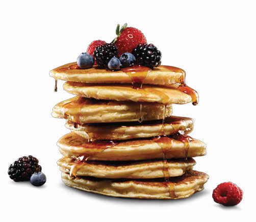

Pancake
Home

Description
This recipe features a sweet and fluffy pancakes topped with fresh bits of chocolate
Ingredients
- all-purpose flour
- eggs
- chocolate chips
- baking powder
- sugar
- vanilla extract
Steps
- Mix wet ingredients: In a separate medium bowl, whisk together the warm milk, melted butter, egg, and vanilla extract until smooth.
- Combine: Pour the wet ingredients into the dry ingredients. Gently fold them together using a fork or whisk just until combined. Tip: Do not overmix; a few small lumps are good for a tender texture.
- Cook: Pour about ¼ to ⅓ cup of batter onto the skillet for each pancake. Cook until bubbles form on the surface and the edges look set (about 2 minutes), then flip and cook for another 1 to 2 minutes until golden brown.
- Place a non-stick skillet or griddle over medium-low heat and lightly butter the surface.